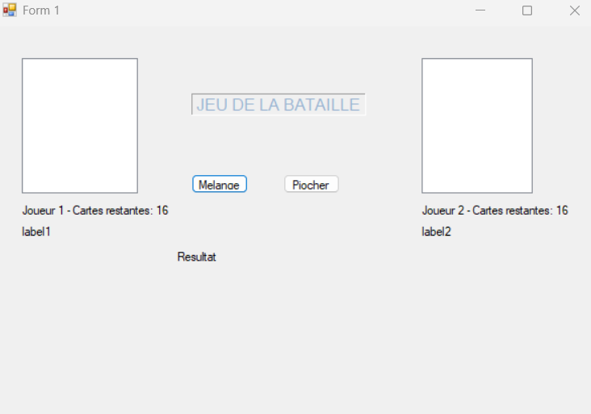
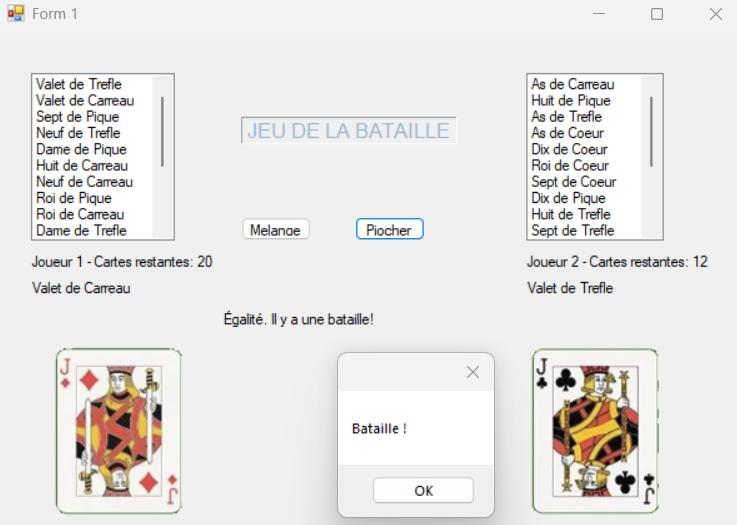
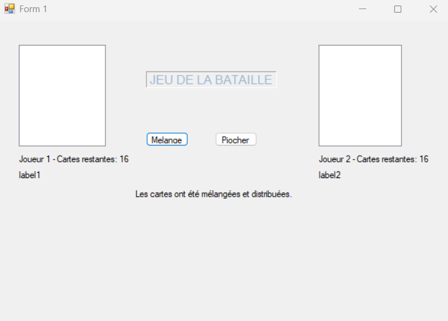

Bataille




Description du projet
Logiciel simulant un jeu de bataille pour 2 joueurs avec un jeu de 32 cartes, chaque joueur en possède au départ 16 et il est possible de mélanger puis piocher les cartes pour les 2 joueurs, le jeu remettant les 2 carte aux joueurs gagnant jusqu'à qu'un joueur n'en ai plus
Technologies utilisées
C#
Windows Forms
Visual Studio